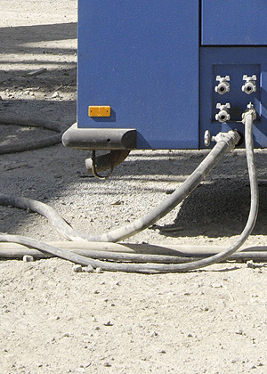

Schläuche, Schlauchleitungen und Förderleitungen können durch Fehler oder mangelnde Sorgfalt bei der Auslegung, Auswahl und Fertigung, aber auch durch Alterung und nicht ordnungsgemäße Verwendung versagen.
Die dabei auftretenden Gefährdungen sind hier insbesondere das Herumschlagen (Aufpeitschen) des Schlauches oder der Schlauchleitung und das Austreten des Fördergutes unter hohem Druck.
Zu unterscheiden sind unter anderem Hydraulikschlauchleitungen (hydraulische Anlagen und Maschinen), Förderleitungen (Schläuche und Rohre von Mörtelförder- und Spritzmaschinen sowie Betonpumpen), Schläuche bei Strahlarbeiten und bei Hochdruckreinigern.